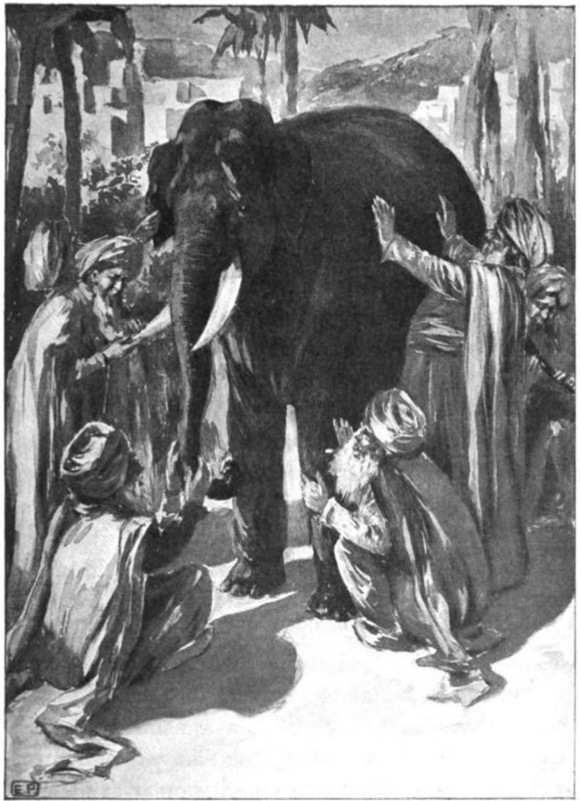
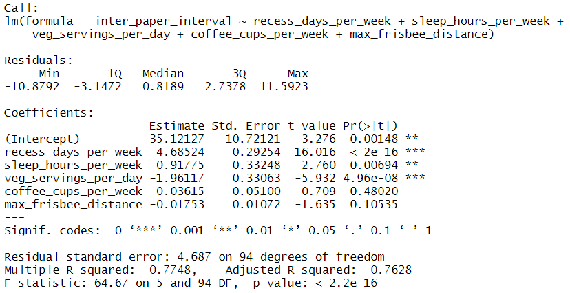
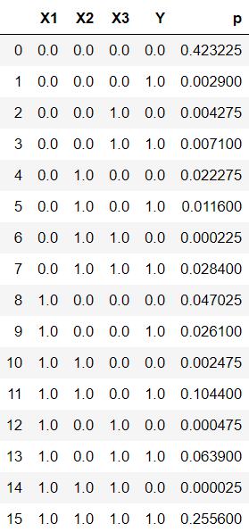
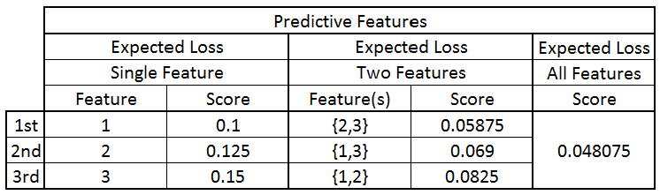
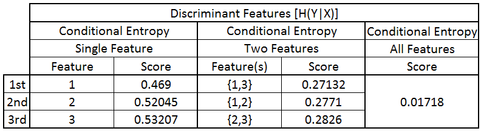
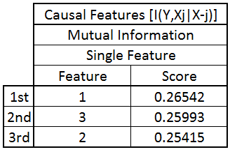
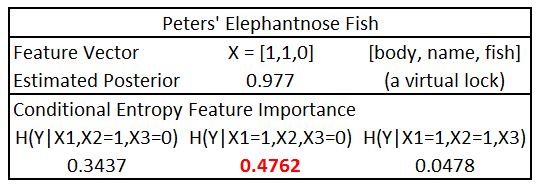
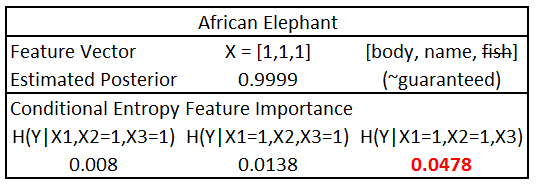
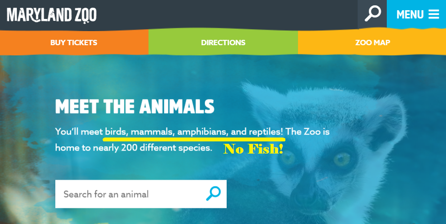

name:opening **LFInTS - Local Feature Importance in Test Samples**<br> Mike Powell | {[BME](https://www.bme.jhu.edu/), [CIS](http://cis.jhu.edu/), [KNDI](http://kavlijhu.org/)}@[JHU](https://www.jhu.edu/) <center> <a href="https://neurodata.io"></a> </center> <!-- <img src="images/funding/jhu_bme_blue.png" STYLE="HEIGHT:95px;"/> --> <!-- <img src="images/funding/KNDI.png" STYLE="HEIGHT:95px;"/> --> <!-- <font color="grey"></font> --> .foot[[mike.powell@jhu.edu](mailto:mike.powell@jhu.edu) | <http://neurodata.io/> | [@neuro_data](https://twitter.com/neuro_data)] --- ## Outline - Binary Classification - K-Sample Testing - Global Feature Importance - Local Feature Importance --- class: middle ## .center[.k[Motivating Example]] --- ### The Blind Men and the Elephant <br/> <center>  </center> --- ### The Blind Men and the Elephant <br/><br/> A group of blind men heard that a strange animal known as an elephant had been brought to the town, but none of them were aware of its shape and form. Out of curiosity they said, "We must inspect and know it by touch, of which we are capable." So they sought it out, and when they found it, they groped about it. The first man, whose hand landed on the trunk, said, "This being is like a thick snake." For another one whose hand reached its ear, it seemed like a kind of fan. Another person, whose hand was upon its leg, said, "The elephant is a pillar like a tree-trunk." The blind man who placed his hand upon its side said the elephant "is a wall." Another who felt its tail described it as a rope. The last felt its tusk, stating the elephant is that which is hard, smooth, and like a spear. [Wikipedia] -- So I ask you, "What is the *defining* characteristic of an elephant?" --- class: middle ## .center[.k[Binary Classification]] --- ### Binary Classification Suppose we have some sample data $X \in \, \mathbb{R}^d$ and corresponding labels $Y \in \{0, 1\}$. -- - $X$ could be data about finances like job history, income, credit score, and $Y$ could be loan approval or rejection. -- - $X$ could be medical data from a variety of tests, and $Y$ could be the presence or absence of disease or injury. -- What should we do first? --- class: middle ## .center[.k[K-Sample Testing]] --- ### K-Sample Testing A natural first question is, “Does our data $X$ contain anything that may help predict $Y$?” K-sample testing can help answer the question: are $X$ and $Y$ independent? -- We have some promising ideas for more powerful k-sample testing we can talk about... -- ...*in a future talk*. --- class: middle ## .center[.k[Global Feature Importance]] --- ### Global Feature Importance Assume our k-sample test reveals dependence. What's our obvious next question? -- Which observed features in $X$ help us differentiate between the two classes in $Y$? -- - Do we need **all** the features? -- - Are some features **more informative** than others? -- This is what **feature importance** is all about. --- ### Global Feature Importance Sometimes feature importance is plain to see. -- <center>  </center> --- ### Global Feature Importance Sometimes feature importance isn't quite so obvious. -- <center> </center> --- ### Global Feature Importance There are several notions of what feature importance could mean: -- - Expected Loss $$L(g)=P\big(g(X) \neq Y\big)$$ -- - Conditional Entropy $$H(Y|X) = \, \mathbb{E}_X \big[ -\sum_y p(y|X)\log{p(y|X)} \big]$$ -- - Mutual Information $$I(Y,X) = H(Y) - H(Y|X)$$ -- - Conditional Mutual Information $$I(Y,X^{(j)}|X^{(-j)}) = H(Y|X^{(-j)}) - H(Y|X)$$ --- ### Global Feature Importance Why do we care which features are important? -- Why not just use them **all**? -- Suppose we do that... --- ### Global Feature Importance **Problem:** Find new graduate students for NeuroData. Don't worry - we have training data! -- - $Y$: Success (Graduated) - $X^{(1)}$: Undergraduate Composite Score (GPA, class rank, etc.) - $X^{(2)}$: Research Composite Score (prior lab experience, GitHub review, publication history) - $X^{(3)}$: Race -- Okay, so maybe using all available features isn’t reasonable because of privacy concerns, legal constraints, or a respect for basic human decency. --- ### Global Feature Importance **New Problem** Test football players for traumatic brain injury. Don't worry - we have training data! -- - $Y$: Presence/absence of traumatic brain injury - $X^{(1)}$: Injury Site Questionnaire / Immediate Behavioral Observations - $X^{(2)}$: CT scan - $X^{(3)}$: MRI - $X^{(4)}$: Intracranial Pressure Monitoring -- Do we really need both the CT and the MRI? -- Intracranial pressure monitoring: “Your scalp will be prepped with an antiseptic solution, and a small hole will be drilled in your skull.” -- Monetary cost, invasiveness, etc., suggest we should limit the total “cost” of the features our model requires. --- ### Global Feature Importance Meets DGL There exist binary-valued random variables $X^{(1)}$, $X^{(2)}$, $X^{(3)}$, $Y \in \{0, 1\}$ such that $X^{(1)}$, $X^{(2)}$, and $X^{(3)}$ are conditionally independent (given $Y$), and $$L^{\*}\left(X^{(1)}\right) < L^{\*}\left(X^{(2)}\right) < L^{\*}\left(X^{(3)}\right)$$ but $$L^{\*}\left(X^{(1)},X^{(2)}\right) > L^{\*}\left(X^{(1)},X^{(3)}\right) > L^{\*}\left(X^{(2)},X^{(3)}\right)$$. --- ### Global Feature Importance Meets DGL **PROOF.** Let $P(Y = 1) = 1/2$. Then the joint distribution of $X^{(1)}$, $X^{(2)}$, $X^{(3)}$, $Y$ is specified by the conditional probabilities $P(X^{(i)} = 1 \mid Y = 0)$ and $P(X^{(i)} = 1 \mid Y = 1)$, $i = 1, 2, 3$. Straightforward calculation shows that the values $P(X^{(1)} = 1 \mid Y = 0) = 0.1, P(X^{(1)} = 1 \mid Y = 1) = 0.9,$ $P(X^{(2)} = 1 \mid Y = 0) = 0.05, P(X^{(2)} = 1 \mid Y = 1) = 0.8,$ $P(X^{(3)} = 1 \mid Y = 0) = 0.01, P(X^{(3)} = 1 \mid Y = 1) = 0.71$ satisfy the stated inequalities. -- These lead to features with varying levels of sensitivity and specificity. --- ### Global Feature Importance Meets DGL <center>  </center> --- ### Global Feature Importance Meets DGL How do the feature importance measures compare? <center>  </center> --- ### Global Feature Importance Meets DGL How do the feature importance measures compare? <center>  </center> --- ### Global Feature Importance Meets DGL How do the feature importance measures compare? <center>  </center> --- ### Global Feature Importance Perhaps this has been a bit unsettling. -- Let me clear it up for you... -- ...*in a future talk*... -- ...because you came today to hear about local feature importance. --- ### Local Feature Importance **Local** feature importance has to do with individual samples. -- **Local** feature importance is about you. It's about me. It's *not* about us. -- - A black box model predicts *YOU* will be successful in NeuroData. What drove that prediction? -- - A black box TBI assessment claims *YOU* will be fine. Why? --- ### Local Feature Importance Let's consider a concrete example: -- You want to buy a house. You need a loan for the purchase. Loan models are far from transparent, but you know the most commonly used models value: - credit score - outstanding debts - employment history - current income -- My *future* talk on global feature importance helped you figure out that credit score and employment history are the most important. -- Unfortunately, *YOU* are not the population... -- ...and you don't have a job (hypothetically). Credit score and employment history are secondary considerations when the model specifically considers *YOU* and your current unemployment. --- ### Investigating Local Feature Importance How can we investigate feature importance at the **local** level? -- A natural idea may be to take your feature vector and... -- 1) perturb it, 2) feed it to the black box, and 3) examine the distribution of outcomes. -- This is what we’re going to try to do in a rigorous way in a final example. --- ### Local Feature Importance at the Maryland Zoo **Problem:** Animal species apply to live at the Maryland Zoo. Nobody knows how they decide to accept or reject a particular species. Don't worry - we have training data! -- - $Y$: Success (Admitted to Zoo) -- - $X^{(1)}$: Has an interesting body feature (long trunk, long neck, cool spots or stripes, etc.). -- - $X^{(2)}$: Animal name fits "African Journey" theme. -- - $X^{(3)}$: Is not a fish. The National Aquarium is down the road... --- ### Local Feature Importance at the Maryland Zoo Let's review our distribution: -- - Most animals in the zoo have a cool body feature. $P(X^{(1)} = 1 \mid Y = 0) = 0.1, P(X^{(1)} = 1 \mid Y = 1) = 0.9,$ -- - It doesn't hurt to have something like "elephant" in your name. $P(X^{(2)} = 1 \mid Y = 0) = 0.05, P(X^{(2)} = 1 \mid Y = 1) = 0.8,$ -- - Keep the fish out! We prefer four legs, but snakes are cool, too. $P(X^{(3)} = 1 \mid Y = 0) = 0.01, P(X^{(3)} = 1 \mid Y = 1) = 0.71$ --- ### Local Feature Importance at the Maryland Zoo Two new applicants for the zoo received their acceptance letters. The first is the **Peters' Elephantnose Fish**. <center> </center> -- How did this little fish get into the zoo of all places? --- ### Local Feature Importance at the Maryland Zoo Let's interpret this table together. <center>  </center> --- ### Local Feature Importance at the Maryland Zoo The second new arrival is the African Elephant. <center> </center> -- It's pretty obvious why this animal is in the zoo, right? --- ### Local Feature Importance at the Maryland Zoo Let's interpret this table together. <center>  </center> --- ### Local Feature Importance Summary We have a lot left to do to understand what all these feature importance measures really mean. -- But you deserve one major takeaway that settles our burning question: -- What is the defining quality of the African Elephant that makes it worthy of occupying a large percentage of the Maryland Zoo? -- It is **not** a fish. --- ### Thanks for your attention. <br> <center>  </center>